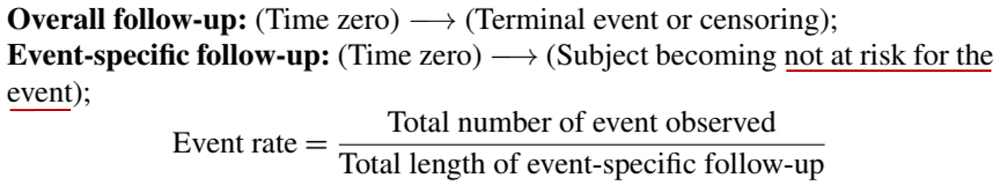
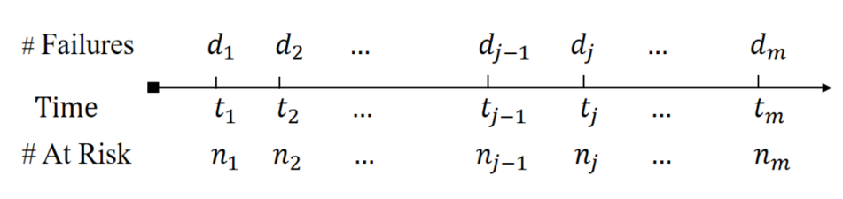
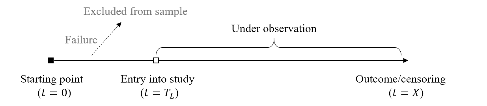
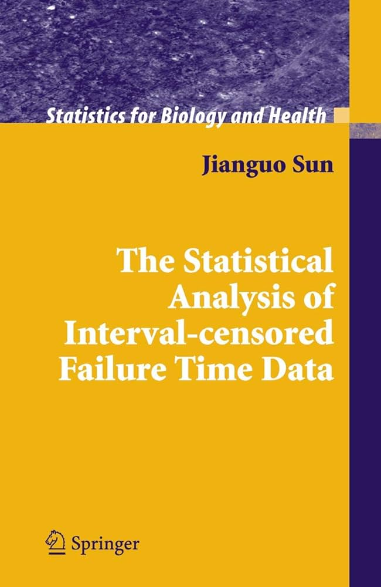
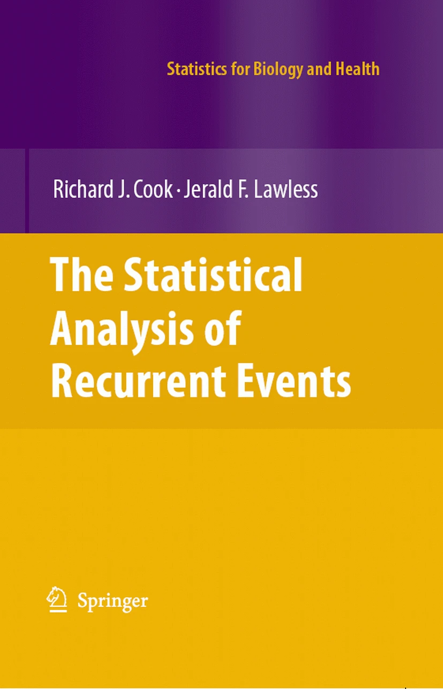

Applied Survival Analysis
Course Recap
Department of Biostatistics & Medical Informatics
University of Wisconsin-Madison
Outline
- What have we learned (and what have we not)?
- Background
- Univariate event time
- Complex outcomes
- Special topics (causal inference and machine learning)
- Are learning objectives achieved?
- What’s next?
\[\newcommand{\d}{{\rm d}}\] \[\newcommand{\T}{{\rm T}}\] \[\newcommand{\dd}{{\rm d}}\] \[\newcommand{\cc}{{\rm c}}\] \[\newcommand{\pr}{{\rm pr}}\] \[\newcommand{\var}{{\rm var}}\] \[\newcommand{\se}{{\rm se}}\] \[\newcommand{\indep}{\perp \!\!\! \perp}\] \[\newcommand{\Pn}{n^{-1}\sum_{i=1}^n}\] \[ \newcommand\mymathop[1]{\mathop{\operatorname{#1}}} \] \[ \newcommand{\Ut}{{n \choose 2}^{-1}\sum_{i<j}\sum} \]
Why BMI-741?
- Censoring
- Outcome event does not occur by end of follow-up
- Partial information (Ch 1)
- Handle with care (standard methods biased)

- Handle with care (standard methods biased)

- Descriptive analysis (Ch 1)
- Baseline characteristics
- Event rate

Mathematical Notation
- Hazard function (instantaneous risk at \(t\)) \[\lambda(t)=\pr(t\leq T<t+\dd t\mid T\geq t)/\dd t\]
- Counting process notation
- \(N(t)\): number of observed (possibly censored) events by \(t\)
- Mean-zero (martingale) residual (Ch 2) \[
\dd M(t) = \underbrace{\dd N(t)}_{\rm observed} - I(X\geq t)\underbrace{\lambda(t)}_{\rm model-based}\dd t
\]
- Construct estimation procedures
- Assess model fit
Standard Methods
- Discrete hazards \(\dd\hat\Lambda(t)=d_j/n_j\)
- Central to standard, hazard-based methods (Ch 3 & 4) 
| R-function | |
|---|---|
| Kaplan-Meier curve | survival::survfit() |
| Log-rank test | survival::survdiff() |
| Cox model | survival::coxph() |
Model Diagnostics
Cox model residual analysis (Ch 4)
| Residual type | Main use | Code |
|---|---|---|
| Cox-Snell | Overall fit | status-resid(obj, type = "martingale") |
| Scheonfeld | Proportionality | cox.zph(obj) |
| Martingale/Deviance | Covariate form; link functionl; outliers | resid(obj, type = c("martingale", "deviance")) |
- Similar strategies for other Cox-type models
- Fine-Gray model for competing risks (Ch 8) (R-package
crskdiag)
- Fine-Gray model for competing risks (Ch 8) (R-package
Importance of Model Checking
- Model diagnostics are important…

Non-Cox Methods
If Cox model doesn’t fit… (Ch 5)
Effect size Software \(\tau\)-RMST Difference/ratio in average life time survRM2::rmst2()Additive hazards Risk difference addhazard::ah()Proportional odds Odds ratio for early event timereg::prop.odds()Accelerated failure time Ratio in life time aftgee::aftgee()
Sample Size Calculation
- Input
- Type I error \(\alpha=0.05\); Desired power \(\gamma = 0.8, 0.9\)
- Assignment proportion \(q = E(Z)\) (e.g., 0.5)
- Nuisance parameter (affected by censoring distribution)
- Log-rank: \(\psi=\pr(T\leq C\mid Z=0)\) proportion of failure
- \(\tau\)-RMST: \(\zeta(\tau)=\int_0^\tau \left\{\int_t^\tau S_0(t)\dd t\right\}^2\pi(t)^{-1}\lambda_0(t)\dd t\)
- Effect sizes ùúÉ: log-hazard ratio; ùúÉ(ùúè): difference in ùúè-RMST
- Formula (Ch 6)
- R-programs available \[ \mbox{Log-rank}: n= \frac{(z_{1-\alpha/2}+z_{\gamma})^2}{q(1-q)\psi\theta^2}\,\,\,\, \mbox{$\tau$-RMST}: n= \frac{\zeta(\tau)(z_{1-\alpha/2}+z_{\gamma})^2}{q(1-q)\theta(\tau)^2} \]
Other Truncation/Censoring
Left truncation (delayed entry; Ch 7)
Surv(start, stop, status):(start, stop)\(=(T_L, X)\) 
- Interval censoring (Ch 7)
- Asymptomatic event tested at periodic visits
- HIV infection; tumor formation
- Nonparametric MLE (NPMLE)
- Proportional hazards/odds models
- R-package
IntCens
- Asymptomatic event tested at periodic visits

Multiple/Recurrent Events
- Key feature (Ch 8 & 9)
Within-subject correlations between multiple events
Frailty (conditional) models Marginal models Interpretation Unit-level hazard Population-level hazard Computation Intensive Simple Statistical efficiency Efficient (more assumptions) Less efficient (fewer assumptions) Robustness Less robust (more assumptions) Robust (fewer assumptions) Association measure Variance of frailty term No such measure
Recurrent Events
- R-code and book (Ch 9)
# Multiplicative intensity (Andersen-Gill)
coxph(Surv(start, stop, status) ~ covariates)
# Multiplicative intensity with Gamma frailty
coxph(Surv(start, stop, status) ~ covariates +
frailty(id, distribution = "gamma"))
# Proportional rates/means (marginal)
# (recommended)
coxph(Surv(start, stop, status) ~ covariates
+ cluster(id))
(Semi-)Competing Risks
- Competing risks (Ch 10)
- Cause-specific hazards
- Conditional failure rate of \(k\)th cause on survivors
coxph(Surv(time, status == k) ~ covariates)
- Cumulative incidence
- Marginal failure probability in whole population under other risks
- Gray’s estimator/test
cmprk::cuminc(ftime, fstatus, group, strata) - Fine-Gray model
cmprk::crr(ftime, fstatus, cov1, failcode = k)
- Cause-specific hazards
- Recurrent events in presence of death (Ch 10)
- Ghosh-Lin methods (R packages
mets,reReg, etc.)
- Ghosh-Lin methods (R packages
Joint Models with Longitudinal Data
Two-stage joint models (Ch 11)
- Longitudinal sub-model \[m_i(t)=\gamma_0+\gamma^\T Z_i(t)+b_i^\T\tilde Z_i(t)\]
obj1 <- nlme::lme()
- Survival sub-model
\(\pr\{t\leq T_i<t+\dd t\mid Z_i^*, \overline m_i(t)\}=\exp\{\beta^\T Z_i^*+\nu m_i(t)\}\lambda_0(t)\dd t\)
obj2 <- survival::coxph()
- Joining two models
JM::jointModel(obj1, obj2, timeVar)
- Longitudinal sub-model \[m_i(t)=\gamma_0+\gamma^\T Z_i(t)+b_i^\T\tilde Z_i(t)\]
Multistate Models
An approach to complex life history data (Ch 12)
- \(Y(t)\in \{0, 1,\ldots, K\}\,\,\,\)
- Transition intensity: risk of going to another state given current state and history
- Cox-type multiplicative intensity models
- Markov or semi-Markov models for intensity \(k\to j\)
coxph(Surv(start, stop, status) ~ covariates, subset = (from==k)&(to==j))


Hierarchical Composite Endpoints
- Motivation
- Importance ranking of components
- Death > hospitalization > minor symptoms
- Statistical methods (Ch 13)
- RMT-IF: net average time favorable to treatment
- Model-free, component-wise decomposable
rmt::rmtfit()
- Win ratio regression
- Prioritized comparison between two subjects
- Log-Win/loss modeled as multiplicative function of \(Z\) with coeff \(\beta\)
- \(\exp(\beta)\): WRs with unit increases in covariates
WR::pwreg()
- RMT-IF: net average time favorable to treatment
Causal Inference
- Counterfactual framework (Ch 14)
- Potential outcomes \(T^{(a)}\) \((a = 1, 0)\)
- Directed Acyclic Graph (DAG)

- Potential outcomes \(T^{(a)}\) \((a = 1, 0)\)
- Marginal structural models
- \(T^{(a)}\) against \(a\) and other covariates
- Inverse probability treatment weighting (IPTW)
- Time-varying treatment/confounding
- R-package:
ipwto compute weights
- \(T^{(a)}\) against \(a\) and other covariates

Machine Learning
- Regularized Cox model (Ch 15)
- Penalize log-partial likelihood by \(L_1\)-norm of \(\beta\)
- Selected variables \(\{Z_{\cdot j}: \hat\beta_j(\lambda_{\rm opt})\neq 0, j=1,\ldots, p\}\)
glmnet::glmnet(Z, Surv(time, status), family = "cox", alpha = 1)
- Survival trees (Ch 15)
- Root node \(\to\) recursive splitting \(\to\) pruning to prevent overfitting
rpart:: rpart(Surv(time, status) ~ covariates)
- Root node \(\to\) recursive splitting \(\to\) pruning to prevent overfitting
- Deeping learning for survival analysis
- Tutorial by Löschmann and Smorodina (2020)
Learning Outcomes
On Syllabus …
After taking the course, students will be able to
- Understand the features of censored data and their impact on statistical inference.
- Select appropriate non- and semi-parametric methods for various data types.
- Evaluate and verify assumptions for estimation and inference.
- Apply statistical procedures to solve real-world problems using R (or SAS).
- Clearly interpret and present analytical results to address substantive questions.
Springer Book
Book manuscript due to Springer by fall 2025
- Check back on study site: https://lmaowisc.github.io/BMI741
- I welcome your feedback!
Final Assignment
- Please take a few minutes to complete course evaluation
- Deadline 5/2/2025
- Target response rate: > 90%
- Your feedback matters!